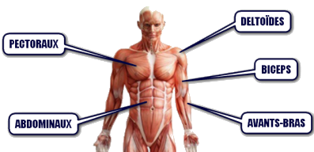
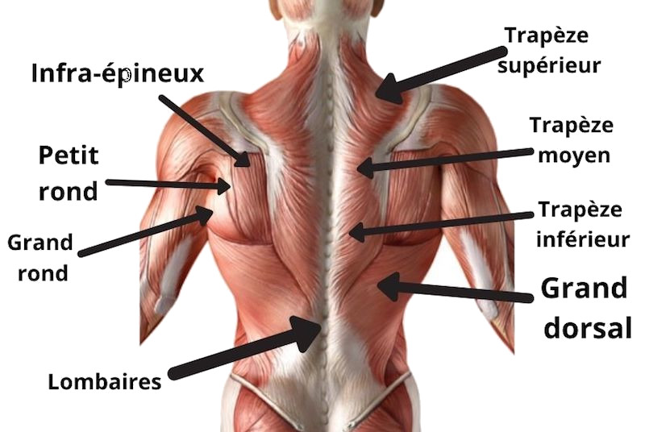
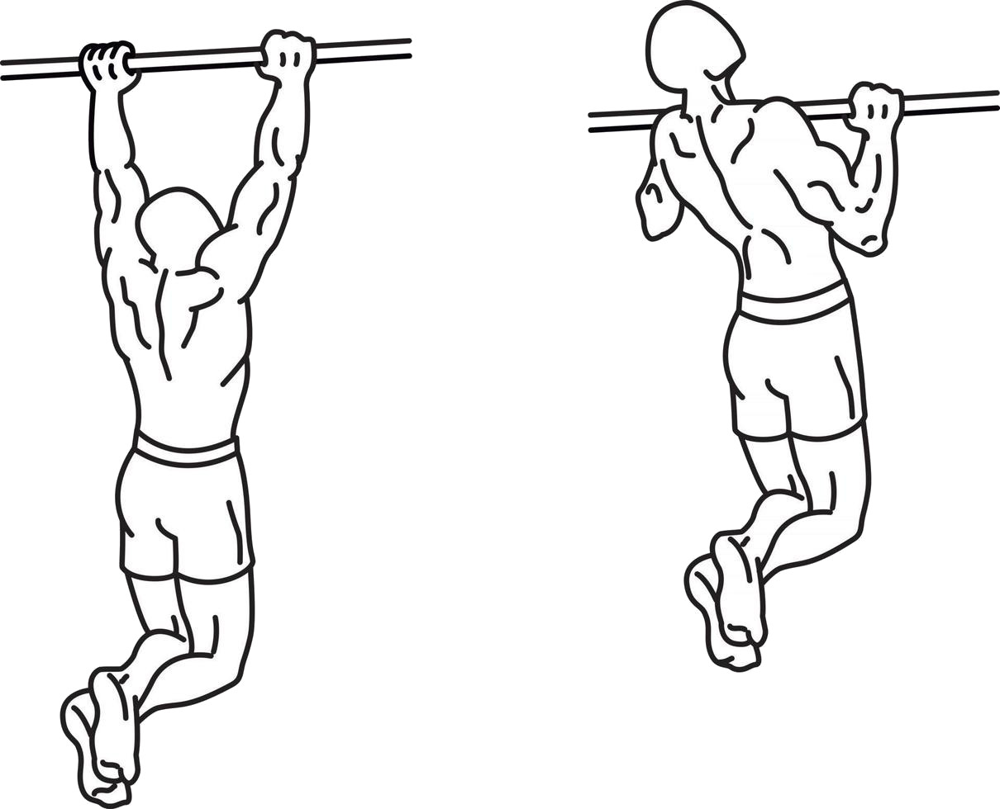

Tout d'abord nous allons ici nous intéresser à la partie supérieur du corps en se basant uniquement sur des exercices de pousser d'où le terme push , comprenant pectoraux, déltoÏdes (épaules), triceps ou encore indirectement les abdos nécessaire pour un bon gainage.
Je précise que cette routine est axé endurance et s'adresse à des pratiquant intermediaire.

Cette entrainement se déroulera comme suit:
1 serie de 70 dips avec une reste pause de 10 sec
2 series de 50 dips avec une reste pause de 10 sec
1 serie de 70 dips avec une reste pause de 10 sec
Il y aura 3 min de repos entre chaque series
Important selon l'inclinaison et votre posure vous aller favoriser certains groupes musculaire:
Vers l'avant les épaules
Centré verticalement les pectoraux
Vers l'arrière les triceps
Nous restons sur la partie supérieure du corps, ce sera au tour du dos, ici nous allons réaliser des exercices de tirage d'où le terme strong>pull, comprenant les dorsaux, et le grand rond majoritairement à l'aide des tractions et bien entendu les biceps.
Ici nous allons combiner l'endurance avec des mouvements isométriques et l'explosivité à l'aide de serie courte pour pouvoir réaliser des muscle-up.
Je rapelle qu'une bonne traction stricte se déroule comme suit:
Ici on ne balance pas les jambes et on s'aide pas de ses épaules à la fin du mouvement tout en ayant une amplitude complète
Cette entrainement se déroulera comme suit:
tractions explosives 4 series de 3 à 6 reps, 2 min de repos entre chaque series
4 series de 5 reps tractions poitrine
2 series tractions stricte max reps, 1min30 de repos
20 sec d'isométrie menton au dessus de la barre
Si vous en voulez plus pour vos biceps vous pouvez opter pour des tractions australiennes en prise supination.
Ici nous allons nous concentrer sur l'endurance la force et l'éxplosivité grace à des mouvement polyarticulaire tel que les jump squat, fentes, ou encore burpees
Cette entrainement se déroulera comme suit:
4 series de 30 secondes de gainage avec 40 secondes de reposc
4 series de 10 fentes jambes alternéesc
30 burpees en moins de series possible